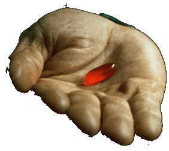
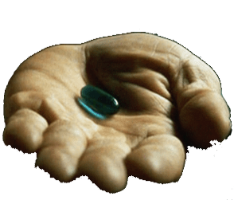
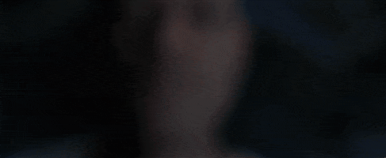

{{define "the-matrix"}}
<!--<!DOCTYPE html>
<html>-->
<head>
	<meta charset="utf-8">
	<title>The Matrix</title>
	<meta http-equiv="X-UA-Compatible" content="IE=edge" />
	<meta name="viewport" content="width=device-width, initial-scale=1.0">
	<meta name="title" content="{{.SiteGenelVeri.BaslikMatrix}}">
	<meta name="description" content="{{.SiteGenelVeri.SiteMetaAciklama}}">
	<meta name="keywords" content="{{.SiteGenelVeri.SiteMetaKelime}}">
	<meta name="robots" content="index, follow">
	<meta http-equiv="Content-Type" content="text/html; charset=utf-8">
    <style>
        body{background:#000;margin:0;padding:0}
        .welcomegif{margin:0 auto;display:none;margin-top:15%}
        .secim{margin:0 auto;display:none;margin-top:15%;text-align:center;box-sizing:border-box}
        .secim img{border-radius:15px;}
        .secim img:hover{cursor:pointer;}
        .secim img.kirmizi{margin-right:5%}
        .secim img.kirmizi:hover{box-shadow:0px 0px 15px #00ff04}
        .secim img.mavi:hover{box-shadow:0px 0px 15px #fff}
        .takipet{margin:0 auto;display:block;width:20%;margin-bottom:5%;}
        .beyaztavsan{margin:0 auto;display:block;width:20%;cursor:pointer;border-radius:15px;box-shadow:0px 0px 10px #fff;}
        .beyaztavsan:hover{box-shadow:0px 0px 15px #00ff04}
        #the-matrix-muzik{display:none}

        @media screen and (max-width: 600px) {
            .takipet,.beyaztavsan,.welcomegif{
                width: 60%;
            }       
            
        }
    </style>
</head>
   <canvas style="display:none;" id="canv" width="500" height="200"></canvas>

<body>
    <div class="secim">
        
        
     </div>
    
    
    
    <audio id="the-matrix-muzik"><source src="./files/the-matrix.mp3" type="audio/mpeg"></audio>


 
</body>
<script>
const canvas = document.getElementById('canv');
const ctx = canvas.getContext('2d');

const w = canvas.width = document.body.offsetWidth;
const h = canvas.height = document.body.offsetHeight;
const cols = Math.floor(w / 20) + 1;
const ypos = Array(cols).fill(0);

ctx.fillStyle = '#000';
ctx.fillRect(0, 0, w, h);

function matrix () {
  ctx.fillStyle = '#0001';
  ctx.fillRect(0, 0, w, h);
  
  ctx.fillStyle = '#0f0';
  ctx.font = '15pt monospace';
  
  ypos.forEach((y, ind) => {
    const text = String.fromCharCode(Math.random() * 128);
    const x = ind * 20;
    ctx.fillText(text, x, y);
    if (y > 100 + Math.random() * 10000) ypos[ind] = 0;
    else ypos[ind] = y + 20;
  });
}


function beyaztavsan(){
    var ses = document.getElementById("the-matrix-muzik"); 
    ses.play();
    document.querySelector('.takipet').style.display = "none";
    document.querySelector('.beyaztavsan').style.display = "none";
    document.querySelector('.secim').style.display = "block";
}

function mavi(){
    window.location.replace("{{.SiteGenelVeri.SiteUrl}}");
}

function kirmizi(){
    document.querySelector('.welcomegif').style.display = "block";
    document.querySelector('.secim').style.display = "none";

    setTimeout(function() {
        document.querySelector('.welcomegif').style.display = "none";
        document.querySelector('.secim').style.display = "none";
        document.body.setAttribute("style", "height: 100vh;  width: 100vw;");
        document.getElementById("canv").style.display = "block";
        setInterval(matrix, 50);
    }, 5000);
}
 </script>
{{end}}
